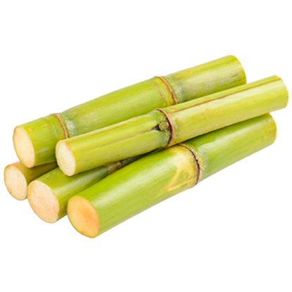
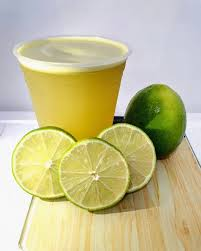
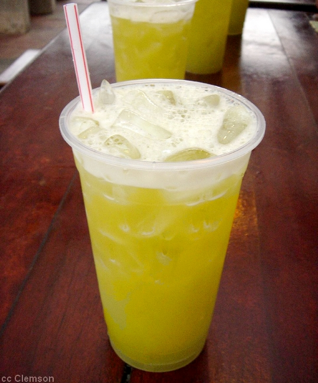

A cana-de-açúcar é uma planta tropical da família das gramíneas. Ela chegou ao Brasil no início da colonização e é essencial para nossa economia. Dela, extraímos o caldo para produzir açúcar, o etanol (combustível) e o bagaço para gerar energia. É uma planta onde nada se perde, tudo se aproveita!
• Origem: Sudeste Asiático (Nova Guiné).
• Época de Plantio: Cana-de-ano (Set/Out) ou Cana-de-ano-e-meio (Jan/Mar).
• Espécies: Saccharum officinarum (rica em açúcar) e Saccharum spontaneum (resistente).
• Floração: Ocorre no outono/inverno.
• Benefícios: Fornece energia rápida, é rica em minerais e ajuda na hidratação.
| Nutriente (100ml) | Valor |
|---|---|
| Cálcio | 10 mg |
| Ferro | 0,5 mg |

Ingredientes: 500ml de caldo fresco e 1 limão taiti.
Preparo: Moa a cana e misture o caldo com suco de 1 limão. Sirva imediatamente para manter o frescor.
Ingredientes: 2 litros de caldo de cana puro.
Preparo: Ferva o caldo de cana puro até ele reduzir e ficar grosso como mel.

Ingredientes: Caldo de cana e gelo picado.
Preparo: Bata o caldo com o gelo no liquidificador até virar uma neve.